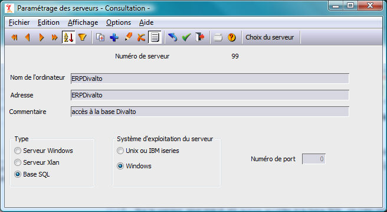

Sur le serveur, pour que XLANSQL puisse accéder à la base SQL, on crée une entrée de type « BaseSQL » dans la table des serveurs par le choix "serveurs" du menu "paramétrage" de Harmony.dhop.
On garnira les champs suivants :
Nom de l'ordinateur : C’est le nom de la base SQL. Par exemple ERPDivalto. Ce nom servira de chemin pour accéder au serveur SQL depuis le poste client. (Voir Chemins implicites). Pour Oracle il correspond au nom du schéma propriétaire des tables.
Adresse : C'est le nom de la base de donnée du serveur SQL. Il prend la même valeur que le paramètre Nom de l'ordinateur.
Chemin SQL : (facultatif) Chemin Harmony ou se trouve le répertoire contenant les dictionnaires ainsi le fichier paramètres FHSQL.dhfi de la base. Exemple : /divalto/bases/erpdivalto.
Si non renseigné, le chemin est /divalto/"nom de la base".
Type : doit être positionné à la valeur Base SQL.
Système d'exploitation : Windows
Remarque : Même sur le serveur l'accès à la base SQL par Harmony n'est possible qu'en mode client-serveur, il convient donc de configurer un client sur l'ordinateur du serveur pour accéder à la base de données par l'application ou l'utilitaire XPSQL.
Voir également : la configuration sur le poste client.
